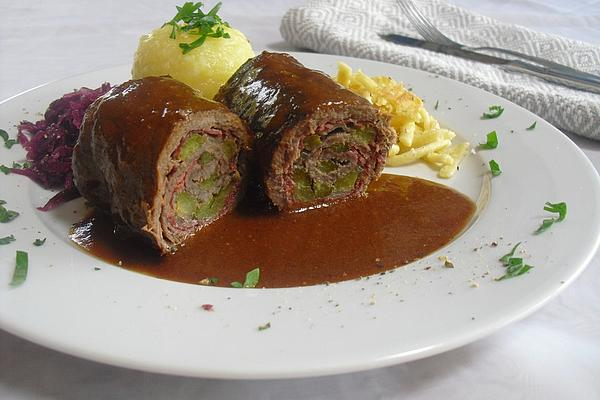

Rinderroulade
Beschreibung

Rinderrouladen sind ein klassiker der deutschen Hausmannskost, welches auch in einigen Nachbarländern überaus
beliebt ist. Hauptsächlich bestehen Rinderrouladen aus dünn geschnittenen Scheiben der Rinderkeule, idealerweise
aus der Oberschale. Ansonsten lassen sich auch Unterschale, Dicker Bug oder Kugel verwenden.
Die Scheiben werden mit Senf, Salz und Pfeffer gewürzt und mit Speck, Zwiebeln und sauren Gurken belegt. Zusammen
mit Beilagen wie Klößen und Rotkraut ergibt sich fantastisches
Zutaten
- 600g Rindfleischscheiben von der Oberschale
- Senf
- Salz
- Pfeffer
- Essiggurken
- Scheibenspeck
- Zwiebeln
- Das Fleisch abklopfen und waschen
- Fleisch salzen und Pfeffern
- Fleisch mit Senf bestreichen, sowie mit Zwiebeln und Gurken belegen
- Fleischscheiben eng zusammenrollen und mit Zahnstochern befestigen
- Die Rinderrouladen scharf anbraten
- Die Soße zubereiten und die Rouladen hierin für 4 Stunden bei kleiner Temperatur leicht köcheln lassen.
- Dazu passen Kartoffelknödel und Rotkraut
Startseite